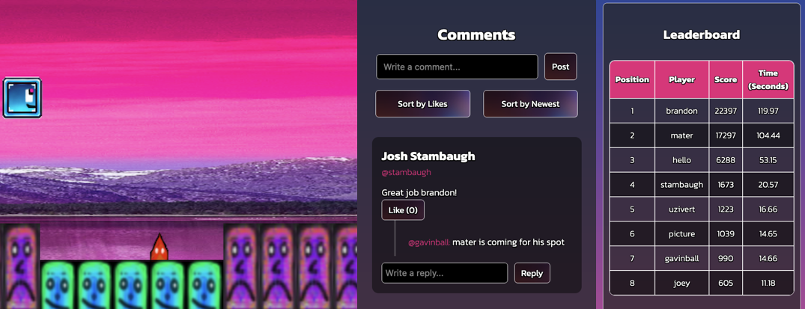

Here is a little about shape run...
Welcome, I'm glad you decided to join us. now that you're here, here is Shape Run! Shape run offers a range of features for valued users like you! If you're ever lost or unsure what to do, no problem! Just head on over to the "Help" tab and there are helpful tips waiting for you. Want to play some games? Head over to "Game" and play Shape Run! Want to compare scores, head over to "Leaderboard" where you can look at scores and converse with other players! The fun is waiting, so what are you waiting for? Jump right in to Shape Run! Thanks for joining us!
Who are we, you may ask? We are the creators, Gavin and Josh. We created Shape Run because of our love of video games, and our nostalgia for old school flash games and video game forums. We also happen to be CSC 337 students.